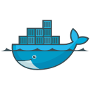
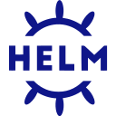
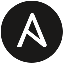
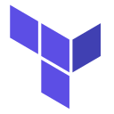

The pipeline
era is over.
Application teams declare intent.
Organizations define policy.
Oyzu delivers.
$1MSEED ROUND
Source → artifact → production
Source → artifact → production
One standard.
Across every application.
Update shared rules or templates.
Coordinate adoption.
 Data servicesVERIFY ADOPTION
Data servicesVERIFY ADOPTIONA component now prohibited by policy.
SBOM identifies the component.
Artifact digest links to recorded deployments.
 AWSProduction deployment
AWSProduction deploymentNow the team faces rework, exception requests and another approval queue.
Repositories describe the application.
Oyzu supplies the delivery expertise.


A conflict is explained before work builds on it.
Approved tools
Trusted dependencies
Same interface
Scoped authority
Generated plan
Required checks

SBOM + provenance
Signed attestations

Authorized delivery
Observed status
Oyzu manages policy distribution, credential coordination, evidence retention and verification.
Customers keep their existing execution and delivery infrastructure.
Govern the first install. Generate delivery. Retain the proof.
GitHub Actions JenkinsHarnessAWS
JenkinsHarnessAWS AzureGoogle CloudKubernetes
AzureGoogle CloudKubernetesWho owns application delivery logic, governance and the associated platform budget.
Use existing execution and specialist delivery. Make Oyzu adoption possible without a wholesale migration.
GitHub ActionsJenkinsGitLabNode.jsPythonGoRustShared policy & evidence
ACTIONS • ARTIFACTS • STATUSAWSAzureGoogle CloudKubernetes
Helm
Ansible
TerraformCloudFormationGitHub Actions8 / 8 JOBS SUCCEEDEDInitial ecosystem profiles, offline container actions and digest-verifiable outputs.
Managed policy, evidence lifecycle, identity and qualified destination adapters.
Public implementation evidence establishes selected technical behavior. Customer adoption and full conformance remain to be earned.